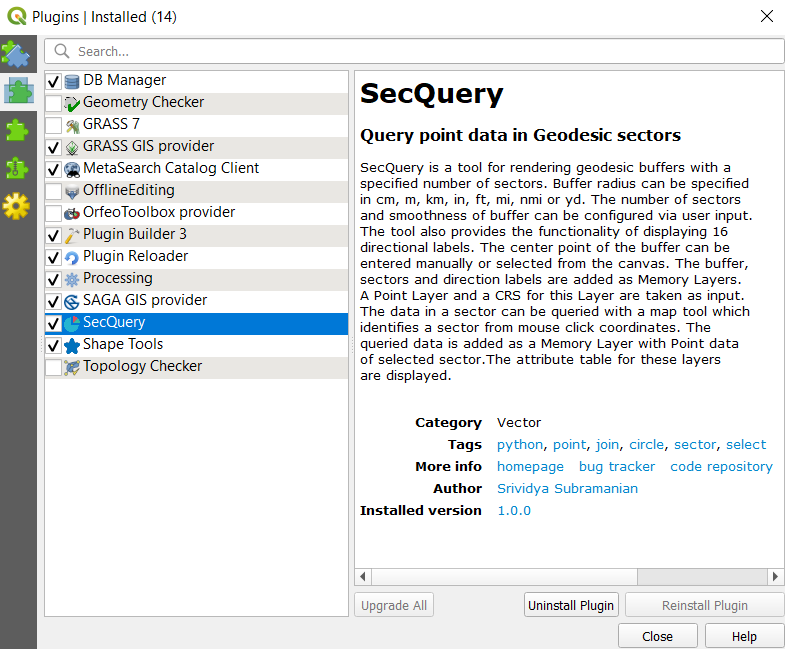
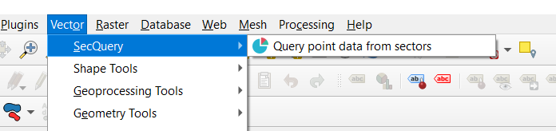
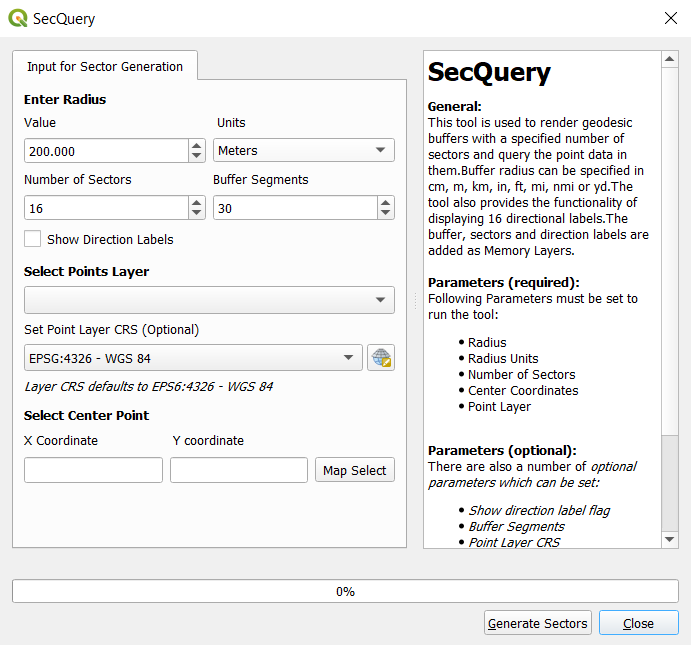
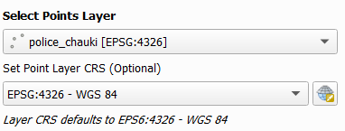
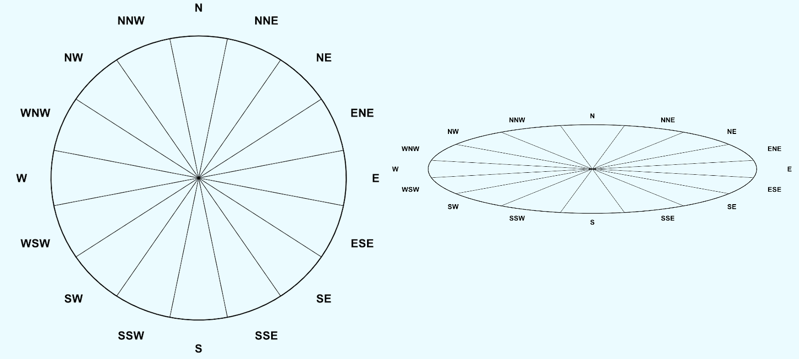
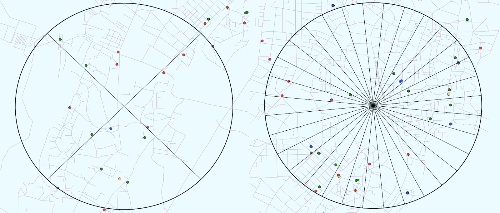
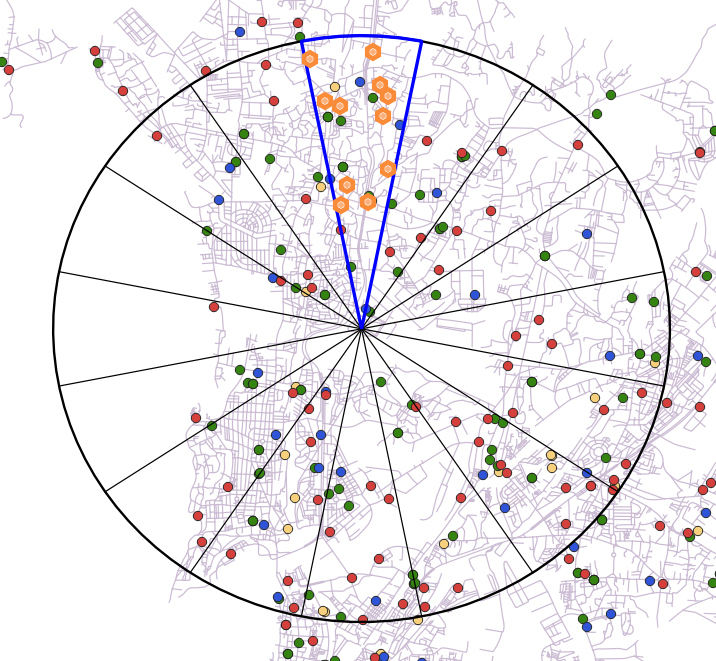
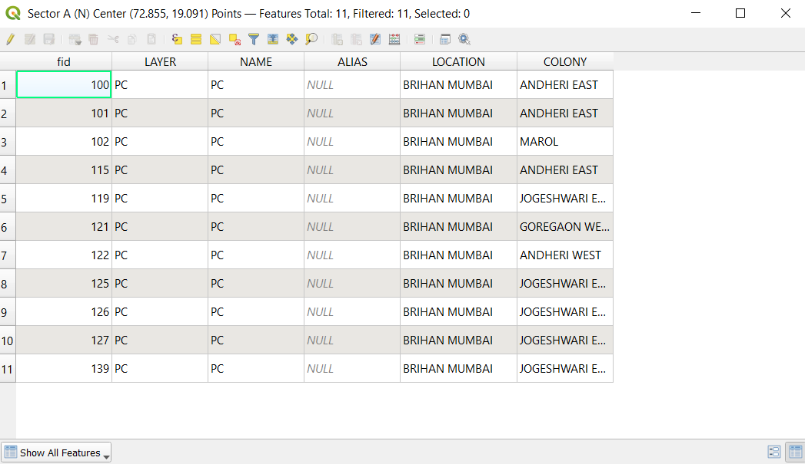
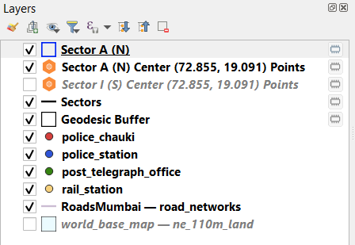

Installation
SecQuery can be installed from the Plugins > Manage and Install Plugins option on the QGIS menu.
Upon installation the plugin can be accessed from the Vector menu and it is also added as a dock widget.
Input Parameters
SecQuery needs radius and center point input for rendering buffers along with a point layer for querying data. The plugin also offers a few optional customizations. The full list of input parameters is described in the following table.
| Field | Description | Default |
|---|---|---|
| Radius Value | Inputs the radius for buffer. | 200.000 |
| Radius Units | Inputs the units for radius. Options = [centimeters, meters, kilometers, inches, feet, miles, nautical miles, yards] |
Meters |
| No. of Sectors | Inputs number of sectors to render (between 4 and 32). | 16 |
| Buffer Segments | Adjust buffer smoothness by changing number of segments (More segments yield smoother arcs). | 30 |
| Direction Labels | Specify if a layer with direction labels should be added. | false |
| Points Layer | Inputs a points layer for querying. | <First layer with type='Point'> |
| Layer CRS | Sets the CRS of the input Points Layer. | EPSG:4326 WGS-84 |
| X Coordinate | Inputs the center X Coordinate. | - |
| Y Coordinate | Inputs the center Y Coordinate. | - |
The following image displays the SecQuery input window. The direction labels can be enabled and disabled via a checkbox. The user may select the center point of the buffer with a map tool or enter them manually.
Point Layer
The point layer input can be selected from the Vector layer dropdown which loads in the vector layers of type=Point that are present in the QGIS project. The CRS for this layer can be set with the Select CRS option. Default CRS is considered as EPSG:4326 - WGS 84.
Sector Generation
Buffers and sectors rendered by SecQuery are geodesic ie. when the tool generates buffers, distances are measured between two points on a globe. This accounts for the earth's actual shape (a geoid). The following image depicts buffers generated at [A] an area close to the equator and [B] an area close to the pole.
The tool can also generate a user defined number of sectors, between 4 and 32, as depicted below.
Query Sector Tool
For querying point data in sectors, a map tool is used which determines the angle of the user's mouse click with the Y Axis to identify the sector number. The queried points are recorded as a new point layer (highlighted in orange) as shown below.
The fields present in the queried data are also displayed via the layer's attribute table.
Output Layers
All the output layers are added as Memory layers. This gives the user freedom to either save them at their desired location from the layer menu or discard them. The output layers are named according to the data they represent and only the currently selected point layer is displayed on the canvas.
Shortcuts
The shortcuts displayed below can be used to pan or zoom on the map canvas while the tool is active. The Quit option provides a functionality to clear all scratch layers. However, this operation will not be carried out unless the user confirms the same.
- Zoom In Ctrl + Scroll In
- Zoom Out Ctrl + Scroll Out
Zoom
- <Hover Mouse & Zoom> Pan to a location
- Q Unset map tool and Quit Plugin